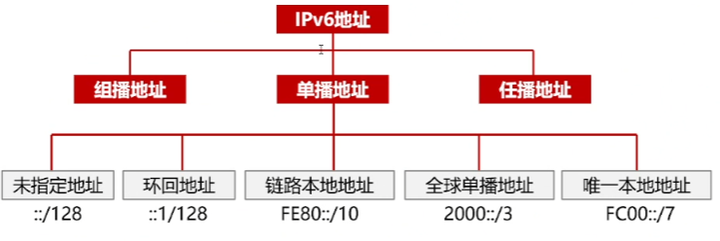
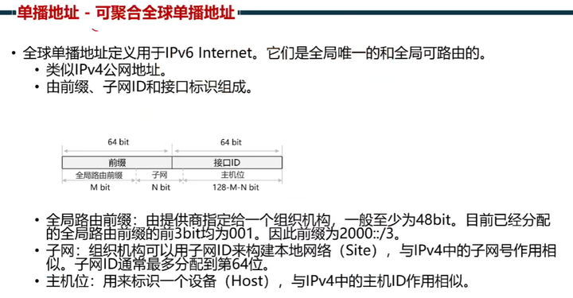
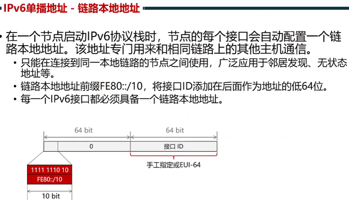
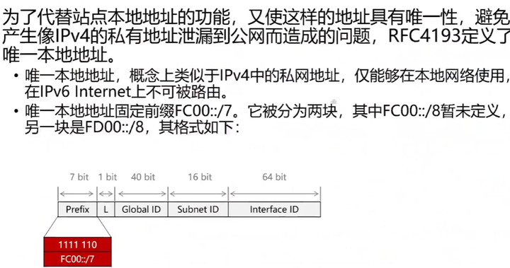
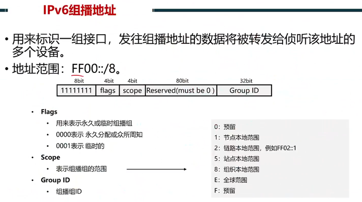
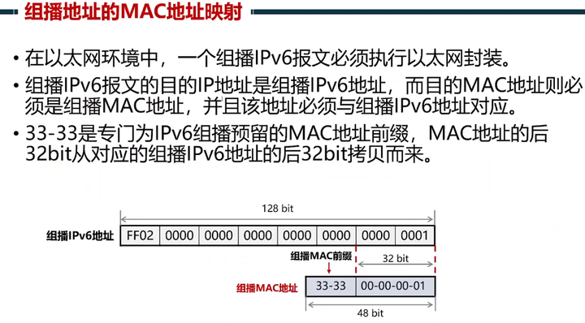
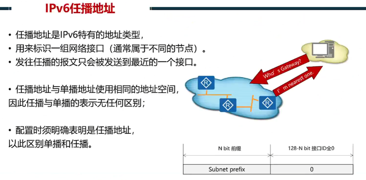

IPV6报文格式与原理
报文格式 ip报文格式大全
Ipv6地址长度为128比特 ，每16比特划分为一段，每段由4个十六进制数表示，并用冒号隔开 Ipv6也是网络层地址，使命也是逻辑寻址。
网络号改成Ipv6前缀
广播域改成link链路
整个ipv6需要熟练掌握链路本地地址、组播mac映射、被请求节点组播地址

1)单播地址，可聚合全球单播地址，2000::/3

2)单播地址，链路本地地址，类似mac地址
①本链接有效、本链路上唯一、不产生路由
②起邻居、路由的下一跳、邻居通信
3)唯一本地地址：ipv6私网地址,为什么还要私网，主要是管理和建设角度，内网规划阶段不用和公网互通的时候，可以先用私网地址规划，也不会担心跑到公网去，后面要接入公网的时候，不会和公网冲突
4)ipv6组播地址
组播地址和mac地址的映射，主要为了让收包的时候更早加组，比如组播报文发给交换机的时候，交换机会泛红给下面的主机，主机收到后（解封装，先解mac，看到三层才知道是否加组）
被请求节点组播地址：替代了v4里面的arp请求广播，泛洪到到所有的主机，由于要解封装到3层才会知道报文是不是自己的，很浪费资源和性能，v6用的被请求节点组播地址和组播地址和mac映射可以在mac层就识别是否是自己相应的报文，不需要到三层

5)任播地址
